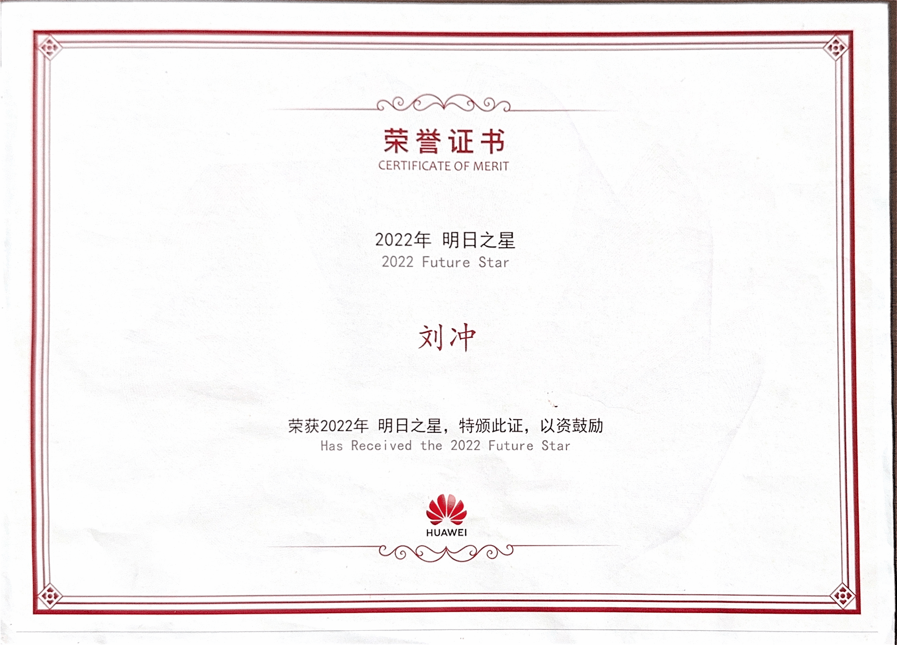

HUAWEI Future Star
About the Award
"Future Star" (明日之星) is Huawei's annual company-wide recognition for employees whose performance and potential stand out within their organization. The certificate of merit below was issued for the 2022 award year.
Certificate

Certificate of Merit (荣誉证书) — "2022 Future Star", issued by Huawei Technologies Co., Ltd. Click the image to zoom.